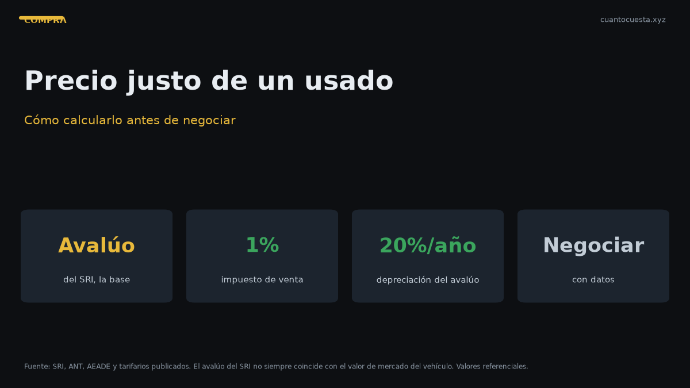

Precio justo de un carro usado en Ecuador: cómo calcularlo antes de negociar
Método de depreciación anual, uso del avalúo del SRI y señales de estafa para calcular y negociar el precio justo de un carro usado en Ecuador.

El precio justo de un carro usado en Ecuador se calcula partiendo del precio actual de ese modelo nuevo y aplicando una depreciación de aproximadamente 20% anual sobre el avalúo. Un auto que hoy cuesta $15.799 nuevos vale alrededor de $12.600 al año de uso y cerca de $10.100 a los dos años, como referencia.
Ese cálculo te da un ancla antes de escuchar la cifra del vendedor. Sin ancla, la negociación se hace sobre lo que el vendedor pide, y ahí siempre pierdes.
El método del porcentaje de depreciación
El avalúo del SRI se deprecia alrededor de un 20% anual. Usando el Kia Soluto 1.4L —el auto más vendido del Ecuador en 2025, con 8.725 unidades y precio de $15.799— el cálculo queda así:
| Antigüedad | Avalúo referencial | Pérdida acumulada |
|---|---|---|
| Nuevo | $15.799 | — |
| 1 año | $12.639 | $3.160 |
| 2 años | $10.111 | $5.688 |
| 3 años | $8.089 | $7.710 |
| 4 años | $6.471 | $9.328 |
| 5 años | $5.177 | $10.622 |
El mismo ejercicio con otros dos modelos de alta rotación:
| Modelo | Nuevo | 2 años | 3 años |
|---|---|---|---|
| Chevrolet Groove | $19.999 | $12.799 | $10.239 |
| Kia Sonet | $21.599 | $13.823 | $11.059 |
La depreciación no es lineal en la vida real. El primer año se pierde la mayor parte y luego la curva se aplana. Por eso un usado de 2 a 3 años suele ser el punto más eficiente de la compra: alguien más ya absorbió el golpe más fuerte.
Con el tiempo, lo que realmente detiene la pérdida es el estado del vehículo y su mantenimiento. Dos autos del mismo año y modelo pueden valer $2.000 de diferencia según kilometraje, historial de servicios y si tuvo choque.
Cómo usar el avalúo del SRI
El avalúo del SRI es un valor oficial que sirve para tres cosas al mismo tiempo:
- Calcular el impuesto del traspaso de dominio, que es del 1% sobre el mayor valor entre el precio del contrato y el avalúo del SRI.
- Determinar la matrícula anual, que incluye el IPVM calculado de forma progresiva entre 0,5% y 6%, además de rodaje municipal, el SPPAT de $26,74, la tasa de la ANT y la revisión técnica de $35. Un promedio de matrícula ronda los $180 anuales.
- Servir de referencia para negociar, porque es un número público que ambos lados pueden consultar.
Por qué el avalúo no es el precio de venta
El avalúo del SRI sigue una tabla administrativa y no conoce el estado real del auto. Un vehículo con 150.000 km, sin historial de mantenimiento y con un choque reparado no vale lo mismo que otro idéntico de 60.000 km con todos los servicios al día.
Trata el avalúo como el techo de referencia, y ajusta hacia abajo según estos factores:
- Kilometraje por encima del promedio (más de 20.000 km al año es uso intensivo).
- Sin historial de mantenimiento documentado. El costo por km de mantenimiento es de aproximadamente $0,048, así que 100.000 km sin servicios equivale a casi $4.800 de gasto atrasado.
- Neumáticos, frenos o amortiguadores al final de su vida. Un juego de llantas son $120-250 por unidad; amortiguadores delanteros, $200-350.
- Choque estructural o inundación. Ahí no se negocia: se descarta el auto.
- Deudas o gravámenes pendientes que tengas que resolver tú.
Cuánto pesa lo que le falta al auto
Antes de negociar, calcula el gasto inmediato que te espera. Es el argumento más sólido que puedes usar.
| Pendiente | Costo referencial |
|---|---|
| Cambio de aceite y filtro | $50 - $90 |
| Alineación y balanceo | $30 - $50 |
| Filtro de aire y de combustible | $50 - $100 |
| Pastillas de freno delanteras | $80 - $150 |
| Batería | $100 - $200 |
| Amortiguadores delanteros | $200 - $350 |
| Juego de 4 llantas | $480 - $1.000 |
| Correa de distribución (si aplica) | $250 - $400 |
Si el vendedor pide $10.000 por un auto que necesita llantas, batería y frenos, el valor real para ti es $10.000 más $800-1.500 de gasto inmediato. Ese número, dicho en la mesa, baja el precio más que cualquier regateo genérico.
Señales de estafa en la venta de usados
- Precio muy por debajo del avalúo del SRI o del mercado. No es ganga: es la señal más frecuente de gravamen, reserva de dominio, choque grave o motor con problemas.
- El vendedor no es el titular registrado y no tiene poder notariado vigente.
- Presión para cerrar hoy mismo con un anticipo en efectivo y "los papeles después".
- Rechazo a la revisión mecánica en un taller elegido por ti.
- Solo efectivo, sin contrato. Sin contrato legalizado no tienes con qué reclamar.
- Kilometraje que no cuadra con el desgaste del pedal, la palanca y el volante.
- Documentos "en trámite" o matrícula que "está en el banco".
- Vendedor que ofrece hacer el traspaso a su manera o propone no declarar el precio real en el contrato.
Declarar un precio menor en el contrato para pagar menos impuesto no funciona: el traspaso se cobra sobre el mayor valor entre el precio del contrato y el avalúo del SRI. Además, deja constancia de un precio falso que te perjudica si luego tienes que reclamar.
Cómo negociar con datos, paso a paso
- Consulta el avalúo del SRI con la placa antes de ver el auto.
- Compara con publicaciones del mismo modelo, año y kilometraje en al menos tres avisos. Descarta el más barato y el más caro; quédate con la mediana.
- Suma el costo de los pendientes que encontraste en la revisión mecánica.
- Presenta el número, no la opinión: "el avalúo es $10.100, le faltan llantas y frenos ($1.000) y el kilometraje está 20.000 km arriba del promedio". Esa frase vale más que "está caro".
- Ofrece un rango, no un precio único. Un rango creíble deja espacio para cerrar.
- Amarra el precio a una condición concreta: que haga el cambio de aceite antes de entregar, o que baje el monto en el equivalente.
- Verifica gravámenes y multas antes de pagar. No hay negociación que valga si el auto no se puede transferir.
- Cierra con contrato legalizado y traspaso el mismo día.
El error más común al negociar
Negociar sobre el precio que pide el vendedor en lugar de sobre el valor real del auto. Si te enfocas en "bajarle $500", aceptas su marco. Si te enfocas en el avalúo, el estado y los pendientes, el marco lo pones tú.
El costo de propiedad después de comprar
El precio de compra es solo el primer gasto. Presupuesta también el año de uso:
| Rubro anual (auto a gasolina, 12.000 km) | Rango |
|---|---|
| Matrícula e impuestos | $150 - $300 |
| Gasolina | $650 - $700 |
| Mantenimiento | $180 - $300 |
| Seguro | $400 |
| Otros | $100 - $200 |
| Total | $1.480 - $1.900 |
Un SUV como la Kia Sportage puede ir de $2.700 a $5.200 al año ($225-430 al mes), y un Nissan Kicks con seguro todo riesgo y 15.000 km anuales ronda los $3.140 al año. El seguro se calcula aproximadamente al 4% del valor del vehículo el primer año: un auto de $15.000 equivale a unos $600 anuales. Considera esa cifra antes de estirar tu presupuesto de compra.
Resumen práctico
- Parte del precio nuevo del modelo y aplica una depreciación de ~20% anual sobre el avalúo.
- Kia Soluto de $15.799 nuevos: cerca de $12.600 al año y $10.100 a los dos años.
- Usa el avalúo del SRI como techo de referencia, no como precio final.
- Ajusta hacia abajo por kilometraje, falta de mantenimiento y componentes al final de su vida útil.
- Calcula el costo de los pendientes inmediatos y úsalo como argumento de negociación.
- Desconfía de precios muy por debajo del mercado: casi siempre esconden gravamen, choque o deuda.
- Cierra con contrato legalizado, traspaso el mismo día y 1% de impuesto sobre el mayor valor entre contrato y avalúo.
- Los valores son referenciales y varían por ciudad, modelo y estado. Verifica el avalúo vigente antes de negociar.
Sigue leyendo
Qué revisar antes de comprar un carro usado en Ecuador (checklist completo)
Checklist mecánico, documentos y pruebas para revisar un carro usado en Ecuador antes de pagar:
Cómo verificar que un carro usado no tenga gravámenes ni multas en Ecuador
Cómo consultar gravámenes, reserva de dominio y multas de un carro usado en Ecuador antes de co
Cómo usamos estos datos
Las cifras de esta guía provienen de fuentes públicas oficiales y tarifarios de concesionarios publicados. Los valores son referenciales: tasas municipales, promociones y precios de repuestos varían. Verifica siempre en la entidad o concesionario antes de decidir.